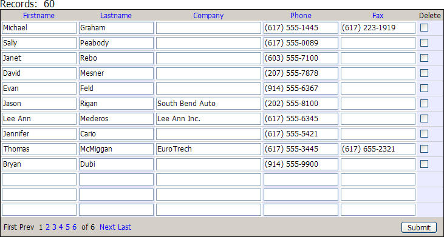

Creating a Grid Component - Tutorial
Start Alpha Five.
Open a database. (This tutorial will use the AlphaSports database located in the Samples\AlphaSports\ directory under your program folder.)
Click Application Server on the toolbar to start the Application Server.
Click Web Projects on the toolbar to display the Web Projects Control Panel.
Select "AlphaSports" in the Project drop down list at the left side of the screen. If "AlphaSports" does not appear in the list:
Click New Project.
Enter "AlphaSports".
Click OK.
Click New > Alpha Five Web Component > OK.
Select Grid and click OK to display the Grid Builder.
On the resulting Component Type page leave the default "Tabular" setting in the Grid layout field unchanged.
Select the Updateable radio button.
Leave the Grid contains a 'Search' part and Grid contains a 'Detail View' part check boxes unselected.
Select the Data to Use from an Alpha Table
Display the Grid > Data Source page.
Select the Alpha Five .dbf Tables radio button.
Display the Grid > Query (DBF) page.
Select the Table radio button.
In the Table name list click
 to navigate to and select the "customer" table.
to navigate to and select the "customer" table.Click Define Primary Key(s).
Select Expression.
Enter "customer_id" and click OK.
Select the Data to Use from an Access Table
Display the Grid > Query (ADO) page.
Select "Access Database" from the Connection Type list.
Click
 next to the Table/View name field and select the "Customer (Table)" entry.
next to the Table/View name field and select the "Customer (Table)" entry.Click
 next to the MDB Filename field to navigate to and select the AlphaSports.MDB database. It is located in the MDBFiles folder.
next to the MDB Filename field to navigate to and select the AlphaSports.MDB database. It is located in the MDBFiles folder.Click Connect.
Select the Table or View radio button.
Click
next to the Table/View name field to select "Customer (Table)".
Select the Data to Use from a SQL Database
Display the Grid > Query (AlphaDAO) page.
Optionally:
Select "Specify Connection String" from the Connection Type list.
Click Build to display the <span class=Screen>Create SQL Connection String</span> dialog.
Click
next to the File Name field to navigate to and select the AlphaSports.MDB database. It is located in the MDBFiles folder.Click Test Connection and OK.
Click Connect.
Select the Table or View radio button.
Click
next to the Table/View name field to select "Customer (Table)".
Display the Grid > Fields page.
In the Available Fields list click on "Firstname".
Hold the SHIFT key down and click on "Fax".
Click
 to add these fields to the grid. The fields that appear on the grid are listed in the Selected Fields list.
to add these fields to the grid. The fields that appear on the grid are listed in the Selected Fields list.
Preview the Grid on the Live Preview Tab
The fastest way to preview the appearance of a grid is to open the Live Preview tab. The tab is located at the bottom of the Grid Builder dialog. This preview mode does not require that you first create an A5W page. The mode interprets the HTML on the page but does not run any Xbasic code.
Click Save on the system toolbar.
Enter "AlphaSports_Customer_Grid".
Click Save.
Click Close.
Click New.
Select Alpha Five Web Page (A5W) and click OK to display the HTML Editor.
Click
 to display the Save Page dialog.
to display the Save Page dialog.Enter "AlphaSports_Customer_Grid" and click Save.
Click Insert Component to display the Insert Component dialog.
Click Select, select the "AlphaSports_Customer_Grid" component, and click OK.
Click
and close the HTML Editor.
Preview the Page and Grid in Your Browser
Previewing the grid in your browser causes the Application Server to process any Xbasic code that may be on the page.
Click A5W Pages in the left pane to see display the list of pages.
The next step is to publish the page to your local webroot. The local webroot is where you will test your website. In most cases you will create a second profile where you will publish your finished public website. Right click the "AlphaSports_Customer_Grid" and select Publish (Local Webroot) and open.
Switch to your browser. The resulting grid should look like the following.

See Also